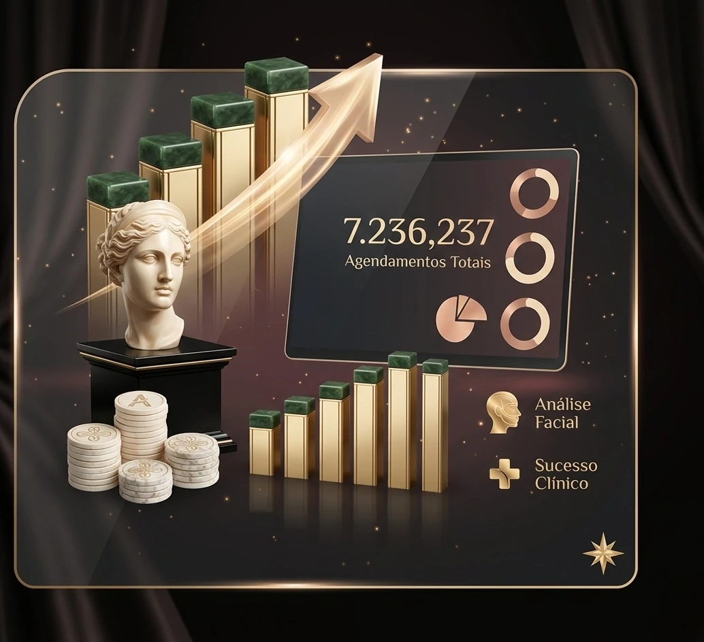

Transforme visitas no seu site em contatos prontos para comprar
Criamos páginas estratégicas que unem posicionamento, autoridade e conversão para fazer seu negócio parar de perder clientes e começar a transformar acessos em vendas reais.
Transforme visitas no seu site em contatos prontos para comprar
Criamos páginas estratégicas que unem posicionamento, autoridade e conversão para fazer seu negócio parar de perder clientes e começar a transformar acessos em vendas reais.
Foco Total em
Conversão & Performance
Se você investe em tráfego ou nem tem site, provavelmente está perdendo clientes todos os dias:
Você investe em anúncios, recebe cliques, mas ninguém entra em contato porque não existe uma página preparada para converter esse interesse em cliente.
Sem um site ou landing page, você manda o cliente para o Instagram ou WhatsApp direto — e perde controle, atenção e oportunidade de convencer.
As pessoas até chegam até você, mas não entendem rápido o seu valor e saem antes de tomar qualquer ação.
Sem uma estrutura de conversão, você depende de indicação ou sorte — em vez de ter um sistema previsível para gerar clientes.

Seu site precisa vender no nível do seu negócio
Seu site explica com clareza por que o cliente deveria falar com você agora?
Quantos acessos você perde todos os dias por não ter uma estrutura pensada para conversão?
Sua página transmite autoridade suficiente para justificar seu preço?
Você está sendo lembrado como solução ou apenas mais uma opção no mercado?
Pare de levar pessoas para páginas que não convertem. Construa uma máquina de geração de clientes que valoriza cada visita e aumenta sua chance de fechar negócios.
Ecossistema de Conversão
Sua estrutura digital pensada para vender
Rastreamento Inteligente!
Configuramos eventos e monitoramento para entender exatamente onde o visitante clicou, quanto avançou e quais ações geram mais oportunidades.
"Pare de ter um site no escuro. Use dados reais para entender o comportamento do visitante e melhorar a conversão."
Foco em WhatsApp e Contato!
A página é desenhada para reduzir distrações e conduzir a pessoa ao próximo passo com clareza, seja no WhatsApp, formulário ou botão de ação.
"Menos confusão, mais conversão. O visitante precisa entender rápido e agir sem esforço."
Performance Mobile!
Seu site é pensado para carregar rápido, ter leitura fácil e funcionar perfeitamente no celular, onde a maior parte dos acessos acontece.
"Cada segundo conta. Um site lento derruba confiança, aumenta saída e faz você perder cliente antes da conversa começar."
Posicionamento Premium!
Criamos uma presença visual que comunica valor, autoridade e profissionalismo para o cliente perceber que sua solução não é comum.
"Quando a página transmite valor, o cliente para de comparar só por preço e começa a enxergar sua oferta como investimento."
Processo Estratégico
Um caminho pensado para transformar seu site em uma ferramenta real de geração de leads e vendas.Diagnóstico e Posicionamento
Entendemos seu negócio, seu público e a principal dor que sua página precisa resolver para gerar mais contatos qualificados.
Estrutura da Landing Page
Montamos uma página com headline forte, hierarquia visual, provas, gatilhos mentais e CTAs para conduzir o visitante até o contato.
Rastreamento e Eventos
Configuramos ferramentas para medir cliques, conversões e comportamento do usuário, permitindo decisões mais inteligentes.
Conexão com Tráfego e Aquisição
Sua página fica pronta para receber tráfego do Instagram, anúncios, Google ou outras fontes, sem desperdiçar acessos.
Otimização de Conversão
Analisamos dados e ajustamos os elementos da página para aumentar a taxa de contato e reduzir a perda de visitantes.
Escala e Crescimento
Com a estrutura validada, seu site passa a sustentar mais tráfego, mais contatos e mais oportunidades de venda com previsibilidade.
Quem é Augusto?
Augusto é um estrategista digital e desenvolvedor focado em um único objetivo: transformar sites em ferramentas reais de geração de clientes. Especialista em criar estruturas que unem design, clareza e conversão.
Sua metodologia foi pensada para negócios que não querem apenas “ter presença online”, mas sim usar a internet de forma estratégica. Ele não entrega só um site bonito, mas uma estrutura feita para vender, captar leads e aumentar o valor percebido da sua oferta.
Unindo design de alta performance, copy estratégica e pensamento de conversão, Augusto é o parceiro ideal para marcas e profissionais que buscam mais autoridade, mais contatos qualificados e uma presença digital que trabalha a favor do crescimento do negócio.
Vantagem Competitiva
O PODER DE UM SITE DE ALTA CONVERSÃO
Na internet, o visitante decide em segundos se continua ou sai. Com uma estrutura estratégica, seu negócio prende a atenção certa e transforma interesse em ação:
Inteligência de Dados
Seu site deixa de ser apenas visual e passa a gerar informações valiosas sobre o comportamento do visitante e os pontos de conversão.
Filtro de Curiosos
Uma boa página organiza sua oferta, responde objeções e filtra visitantes desqualificados antes mesmo do contato.
Posicionamento Premium
Diferencie seu negócio do comum. Um site bem estruturado aumenta autoridade e eleva a percepção de valor da sua entrega.
Experiência Instantânea
Velocidade, clareza e fluidez no mobile para reduzir abandono e aumentar a chance do visitante continuar até a ação.
Prova Social Estratégica
Depoimentos, resultados e argumentos bem distribuídos ajudam a quebrar objeções e aumentam a confiança na sua proposta.
Previsibilidade de Crescimento
Um site pensado para conversão deixa de ser custo e passa a funcionar como ativo para gerar contatos, oportunidades e vendas.
Pare de perder clientes por causa de um site fraco.
Seu negócio merece uma estrutura digital que transforme atenção em contato e contato em oportunidade real. Vamos construir sua página de alta conversão?
Consultoria estratégica para negócios que querem vender mais
© 2026 Augusto Webp — Especialista em Sites de Alta Conversão